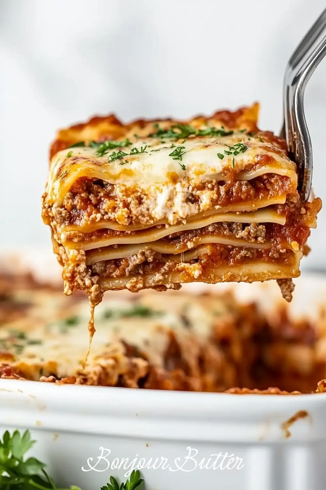

HOMEMADE LASAGNE

Lasagna with Meat Ragù and Béchamel
A classic baked lasagna with layers of homemade egg pasta sheets, slow-cooked meat ragù, and creamy béchamel, finished with Parmesan.
INGREDIENTS
- 300 grams 00 flour (plus extra for dusting)
- 3 large eggs
- 2 tablespoons extra virgin olive oil
- 1 onion, finely chopped
- 1 carrot, finely chopped
- 1 celery stalk, finely chopped
- 400 grams ground beef
- 200 grams ground pork
- 120 milliliters dry red wine
- 700 milliliters canned crushed tomatoes
- 150 milliliters whole milk (for ragù)
- 1 teaspoons salt and pepper for ragù
- 80 grams unsalted butter (for béchamel)
- 80 grams 00 flour (for béchamel)
- 1 liters whole milk (for béchamel)
- 0.3 teaspoons fresh nutmeg, grated
- 0.8 teaspoons salt for béchamel
- 200 grams grated Parmesan cheese
- 2 tablespoons butter, for greasing the dish
git stat
STEPS
- Make the pasta dough: Mound the 300 grams 00 flour (plus extra for dusting) on a work surface and make
a well in the center. Crack in the 3 large eggs and add the 2 tablespoons extra virgin olive oil.
Using a fork, gradually beat the eggs, slowly incorporating flour from the inner edges of the well until
a shaggy dough forms.
- Knead and rest the dough: Knead the dough by hand for about 8-10 minutes until smooth and elastic.
Wrap tightly in plastic wrap and let rest at room temperature.
- Cook the soffritto: In a large heavy pot, heat a splash of olive oil over medium heat.
Add 1 onion, finely chopped, 1 carrot, finely chopped, and 1 celery stalk, finely chopped.
Cook, stirring occasionally, until softened, about 6-8 minutes.
- Brown the meat: Add the 400 grams ground beef and 200 grams ground pork to the pot.
Cook, breaking up with a spoon, until browned all over, about 8 minutes.
- Deglaze with wine: Pour in the 120 milliliters dry red wine and cook until it has mostly evaporated,
scraping up any browned bits from the bottom of the pot.
- Simmer the ragù: Stir in the 700 milliliters canned crushed tomatoes and 150 milliliters whole milk
(for ragù). Season with 1 teaspoons salt and pepper for ragù. Bring to a gentle simmer, then reduce heat
to low and cook uncovered, stirring occasionally, until thick and rich.
- Roll out the pasta sheets: Divide the rested pasta dough into portions and roll through a pasta machine,
working down to the second-thinnest setting, until you have thin sheets. Cut into rectangles sized to
fit your baking dish.
- Start the béchamel roux: Melt 80 grams unsalted butter (for béchamel) in a saucepan over medium heat.
Whisk in 80 grams 00 flour (for béchamel) and cook, whisking constantly, for 1-2 minutes until it smells
lightly toasted but has not browned.
- Thicken the béchamel: Gradually whisk in the 1 liters whole milk (for béchamel) in a slow stream,
whisking continuously to avoid lumps. Cook, whisking often, until the sauce thickens enough to coat the
back of a spoon.
- Season the béchamel: Remove from heat and stir in 0.3 teaspoons fresh nutmeg, grated and 0.8 teaspoons
salt for béchamel. Set aside, pressing a piece of parchment or plastic wrap directly on the surface to
prevent a skin from forming.
- Preheat and grease the dish: Preheat the oven to 190°C (375°F). Grease a 9x13-inch (23x33cm) baking
dish with the 2 tablespoons butter, for greasing the dish.
- Assemble the layers: Spread a thin layer of béchamel on the bottom of the dish. Add a layer of pasta
sheets, then a layer of ragù, then a layer of béchamel, then a sprinkle of 200 grams grated Parmesan
cheese. Repeat layering until you have 5-6 layers, finishing with a generous layer of béchamel and
Parmesan on top.
- Bake covered: Cover the dish loosely with foil (tented so it doesn't touch the cheese) and bake.
- Bake uncovered: Remove the foil and continue baking until the top is golden and bubbling.
- Rest before serving: Remove from the oven and let the lasagna rest before slicing — this helps the
layers set so they hold together when served.
NOTES
This lasagna is best assembled with fresh pasta sheets, which don't need pre-boiling — they cook through
in the oven using moisture from the ragù and béchamel. If using dried no-boil lasagna sheets instead,
make sure the ragù and béchamel are generous and slightly loose, and consider adding a splash of extra
milk between layers. The dish can be fully assembled a day ahead, covered, and refrigerated —
bring to room temperature before baking, or add 10-15 minutes to the covered baking time.
BACK TO THE HOME